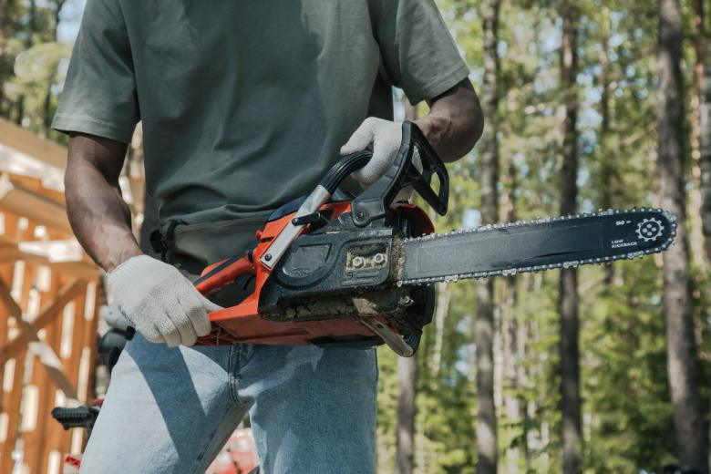
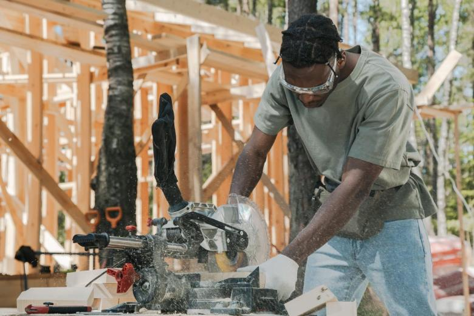
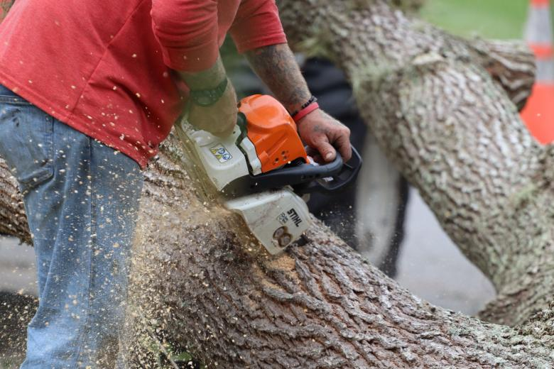

Marzo · abril
El momento correcto
La máquina lleva el verano guardada y el taller está sin cola. Se revisa entera, se afila, se cambia lo que haya que cambiar, y queda esperando.
Propuesta de sitio web — preparada para Motosierras Loncoche por CristalWeb
En la comuna donde media población hace su propia leña, el servicio técnico de motosierras no aparece en internet. La motosierra acá no es herramienta de especialista: es herramienta de casa, y la casa no sabe cuándo llevarla.
Venta y servicio técnico · Loncoche
Una motosierra no se echa a perder de un día para otro: avisa, y avisa en cosas que se ven. El aserrín cambia, la sierra tira para un lado, hay que empujar para que corte. Saber leer eso es la diferencia entre una afilada y una cadena nueva.
Los servicios exactos y los plazos los confirma el taller. falta: qué servicios prestan y en cuánto los entregan
Diagnóstico de máquina
Cinco síntomas que cualquiera puede reconocer sin desarmar nada, qué significa cada uno y qué corresponde hacer. Es información de mantención: acá no hay ni un consejo de corte ni de tala — eso es capacitación, no una página web.
| El síntoma | Qué es | Qué se hace |
|---|---|---|
| El aserrín sale fino, como polvo | La señal más clara de todas. Una cadena sana saca viruta: tiras gruesas y parejas. Cuando sale polvillo, los dientes ya no cortan — raspan. | Afilar |
| La sierra tira hacia un lado | El corte se va en curva y hay que corregir con el brazo. Casi siempre es afilado disparejo: un lado de los dientes quedó más corto que el otro. | Afilar parejo |
| Hay que apretar para que corte | Una cadena en buen estado entra sola con el peso de la máquina. Si hay que empujarla, está roma o mal tensada — y forzar es como se rompen las cosas. | Afilar Tensar |
| Sale humo con madera seca | Roce donde no debería haberlo: tensión mal puesta o falta de lubricación en la espada. Con madera húmeda pasa desapercibido; con seca se nota al tiro. | Revisar tensión Lubricación |
| Los dientes llegaron a la marca | Cada diente trae una línea que indica hasta dónde se puede afilar. Pasada esa marca no queda material y la cadena deja de ser segura. | Cambiar |
Una cadena se afila muchas veces antes de terminar su vida, y afilarla a tiempo sale barato. Pero llega un punto en que ya no hay diente que afilar, y ahí insistir no es ahorro: es trabajar con una herramienta que no corta y que exige forzarla.
Un taller que le dice a un cliente «esta cadena ya no da» y le cobra una afilada igual, pierde ese cliente. El que se lo dice a tiempo lo tiene toda la vida — y en un pueblo, eso vale más que cualquier publicidad.
Lo que se rompe y por qué
La cadena sin filo obliga a forzar, forzar recalienta, y el calor termina en el embrague o en el pistón. La mayoría de las reparaciones caras empiezan como un mantenimiento barato que se fue postergando. Por eso conviene saber qué revisar antes de la temporada — y qué señales avisan que algo va a fallar.
La mantención de temporada
Todos se acuerdan de la motosierra el mismo día: cuando empieza a hacer frío y hay que hacer la leña. Ese día el taller tiene cola, y la máquina que llegó en marzo ya está lista.
Marzo · abril
La máquina lleva el verano guardada y el taller está sin cola. Se revisa entera, se afila, se cambia lo que haya que cambiar, y queda esperando.
Mayo
Empieza a llegar gente. Un trabajo simple sale rápido; si hay que pedir un repuesto, ahí se empieza a estirar.
Junio en adelante
Con las primeras heladas llega el pueblo entero el mismo día. No es que el taller se demore más: es que hay veinte máquinas antes que la suya.
falta: los plazos reales del taller en temporada alta y baja
Esto es lo general del cuidado de una máquina. Lo específico de cada modelo lo dice el manual y lo confirma el taller. falta: revisar esta lista con ellos
Esta página trata de mantención de la herramienta y nada más. No incluye instrucciones de corte, de volteo ni de uso de la motosierra, y no debe tomarse como capacitación: usar una motosierra es un trabajo con riesgo y eso se aprende con alguien al lado, no leyendo. Los síntomas descritos son generales del oficio y el diagnóstico de cada máquina lo hace el taller.
Antes de que llegue el invierno
La leña se corta en verano, y la máquina se prepara antes
Para consultar por una máquina
Es el número publicado en su ficha de Google.
Estas seis ya aparecen más arriba en la página. Vuelven acá en otro tamaño porque una sola pasada de imágenes deja el scroll vacío, y porque de cerca se ven cosas que en grande se pierden. La procedencia de cada una está en imagenes/FUENTES.txt.



El teléfono 9 7396 1882 y que están en Loncoche, con venta y servicio. No tienen sitio propio: sólo redes.
Los cinco síntomas, el criterio de afilar o cambiar y el cuidado de temporada. Son del oficio, no de este taller, y por eso van marcados.
Tres cosas: qué servicios prestan exactamente, en cuánto los entregan en temporada alta y baja, y si venden cadenas y espadas o sólo reparan. Con eso la página deja de explicar el rubro y pasa a resolver la llamada.